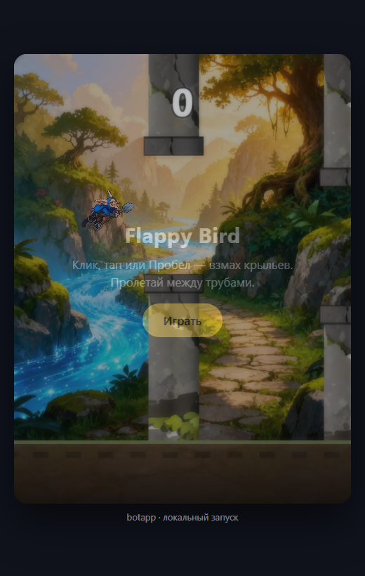

Экспорт в PDF: Ctrl + P → «Сохранить как PDF» → размер страницы «Альбомная», поля «Нет». Каждый слайд печатается на отдельной странице.
Выпускная квалификационная работа

Три независимых модуля на Python. Игровой клиент — одностраничное приложение на HTML5 Canvas. Обмен между ними — по протоколу HTTP; для работы кнопки используется HTTPS.
Доклад окончен. Готов ответить на ваши вопросы.